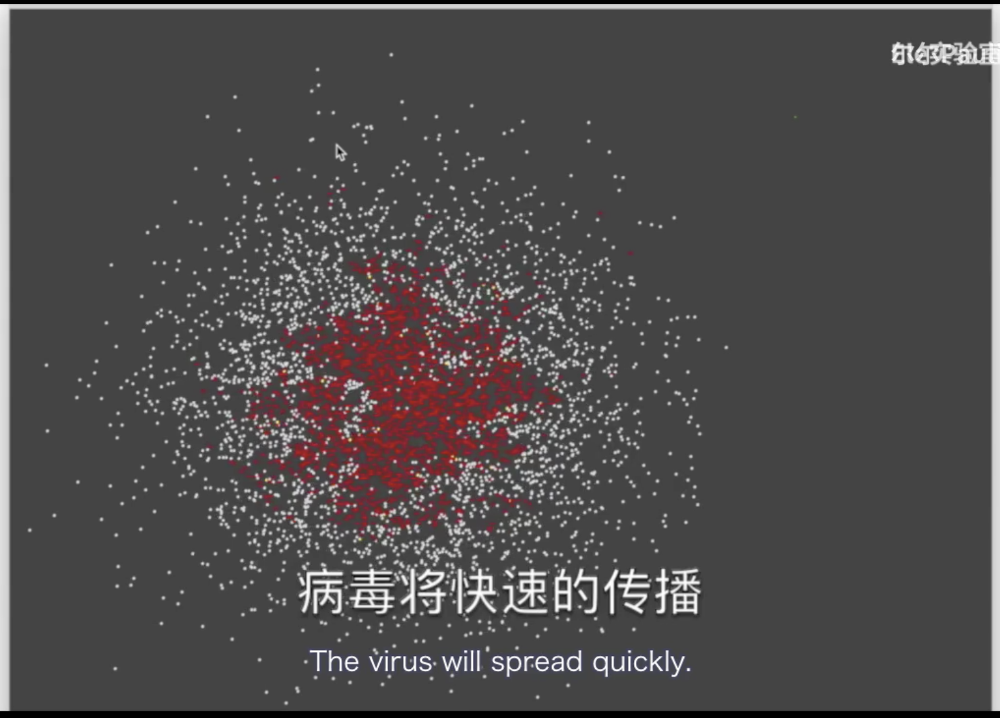
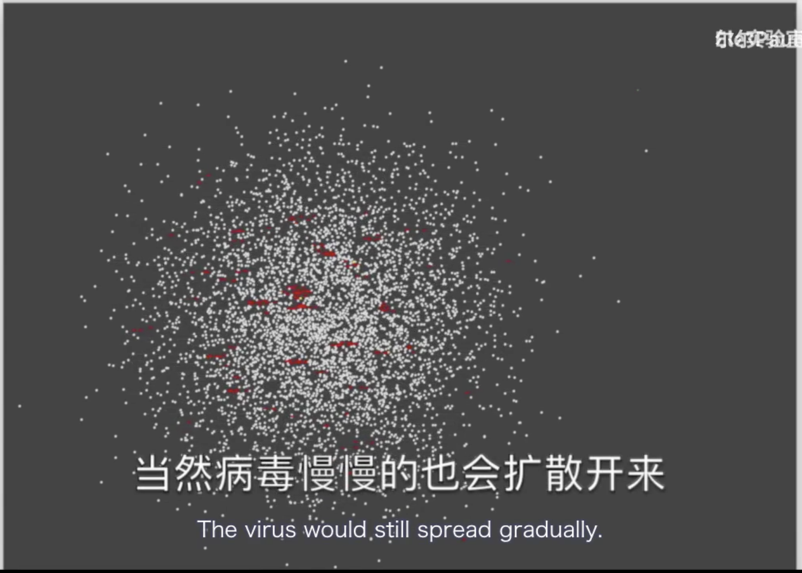
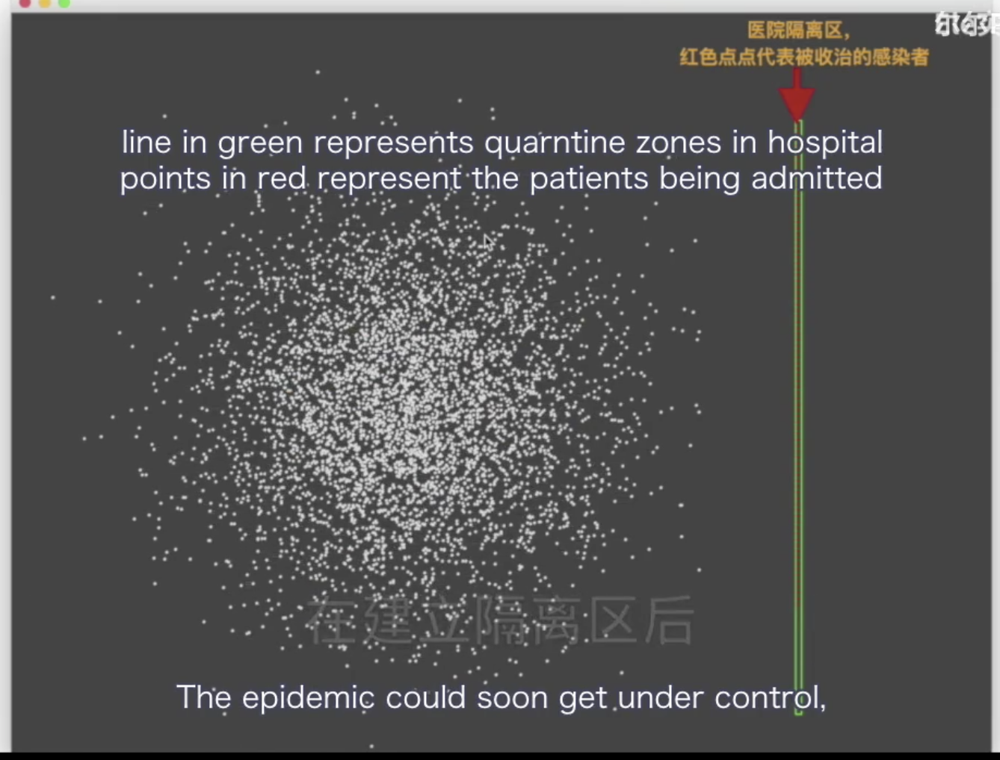
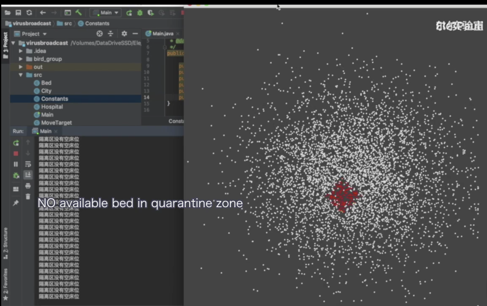
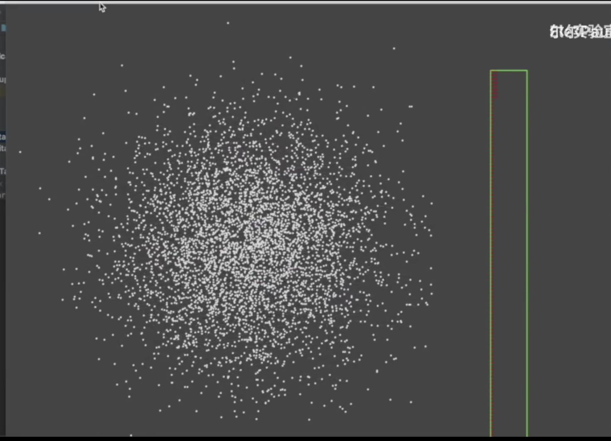
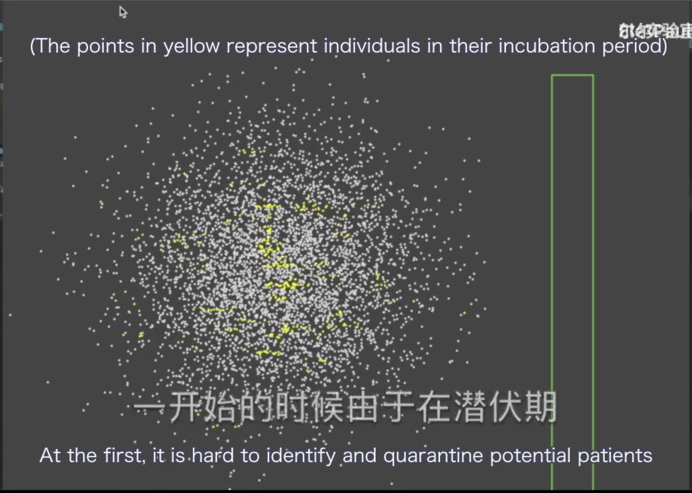
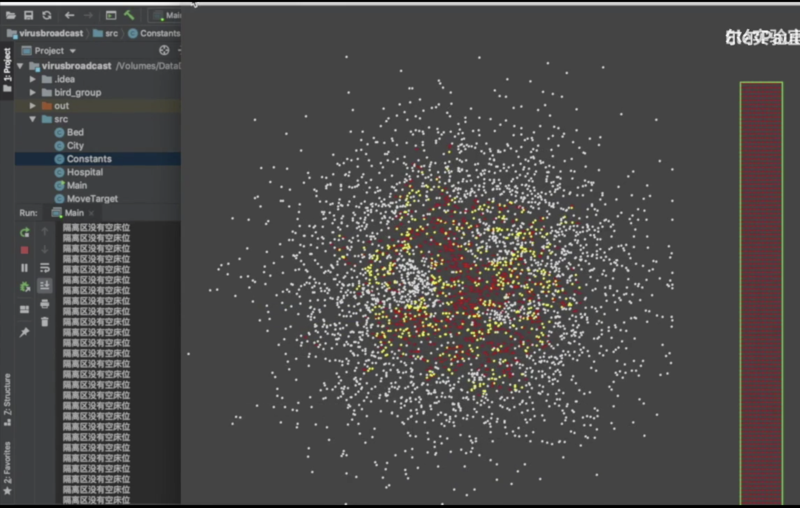
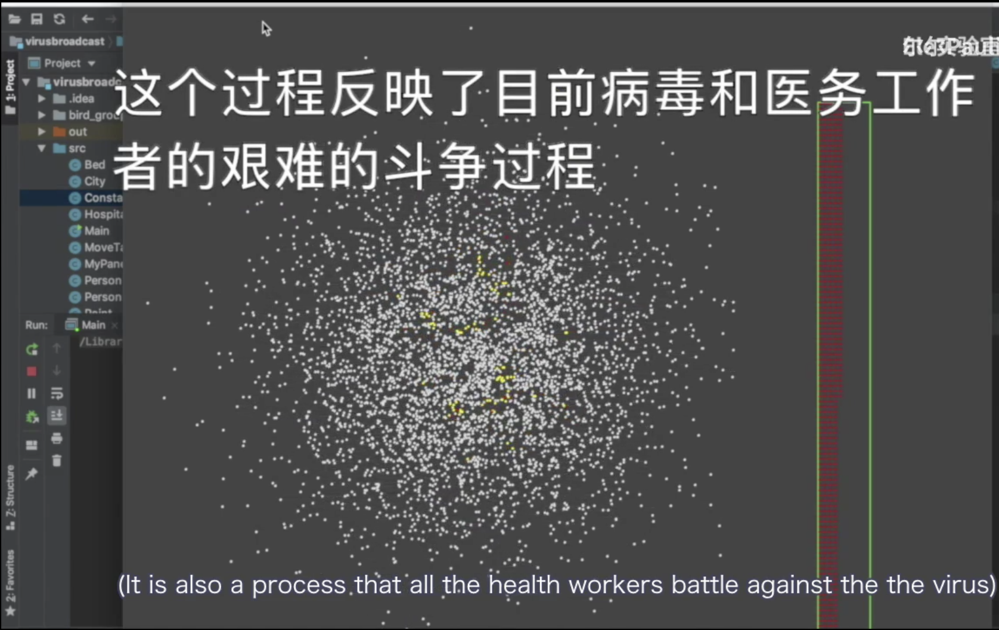

原视频由ELe实验室制作并在b站发布，已获得授权进行英译并做一定修改，本文为视频翻译文稿，版权归原作者所有。 放弃表达就只可能被代表。
英译视频地址：
In this video, I’m sharing a simulation program created by a Chinese programmer explaining why self-quarantine is crucial in the fight against COVID-19, which is spreading beyond China and across the world right now. To me, it provides a straightforward and intuitive explanation on the situation we are in right now. So I reached out to the author, and he kindly gave me the permission to translate it into English. I’ve also added some information to it. Hope this could also help you understand more about the outbreak that is dominating all news headlines today.
You could also check the description box of this video (check the reference of this article) if you want to learn more about this epidemic.
The video I’m about to share is published online on 02 Feb. By then, we had been fighting against coronavirus for at least three weeks – that was since the Chinese state broadcaster CCTV first reported about the outbreak on Jan. 12. By the time I begin to make this video, March 06, the cumulative number of infections in China reached 80813, and 3073 out of them died. We still have 22263 patients diagnosed, and 5489 out of them are seriously ill. And there are still 502 suspected cases.
And apart from China, 411 died of coronavirus with 21104 cases confirmed.
So this is all about the background. Let’s see what this video could tell us.
You may have already heard from Internet that it’s still not recommended to leave your home (for non-critical issues) now. We’re still at great risk from coronavirus. But there’re always some people who refuse to understand this situation.
So I spend the whole night writing a simplified epidemic spread simulation program. If text alone cannot convince you of the importance of staying at home, then just let me visualize it for you with this simulation program.
I’m using JAVA, a representative object-oriented language, for the simulation. I’m not introducing here a lot of mathematical model (that could simulate the spread process accurately and precisely) because I want to focus on explaining the basic idea in a timely fashion. I’ll describe most of the event based on a popular model, Normal Distribution (Gaussian Distribution) (which is “often used in the natural and social sciences to represent real-valued random variables whose distributions are not known”. )
For example, in my model, I simulate both the population distribution and mobility intention of each person with normal distribution. And I’ve declared the parameter, the transmission rate of the virus, as constant. It’s a simple idealized model, but it doesn’t affect my explanation of the basic idea about transmission and the key of controlling it.
Here we get some variables used to build the simulation model. At the very beginning, I set the initial infections in a city as 50. Since we may not have any quarantine zone in the hospital at first, I set hospital beds as zero. People are living their daily lives uninterruptedly, so I set the average mobility intention as high as 0.99.
And this is how things would go.

If everyone could choose to stay at home, which means average mobility intention comes down to -0.99.
The thing would be like this.

The virus would still spread gradually.
So, we now need quarantine zones in hospitals. And I change the number of hospital beds to 100. Now if everyone could choose self-quarantine, the epidemic could soon get under control, or even be eradicated.

But…it’s human beings =_+. Sure thing we won’t pay enough attention to this thing at the beginning. So let’s change the mobility intention back to 0.99.
As you can see, we would run out of the hospital beds quickly and everything would be back to the worst situation.

Now we could only enlarge the quarantine zone and add more beds to hospitals. Let’s increase the number of hospital beds by 10 times. And see what’s gonna happen.

The epidemic would be under control quickly as well.
This is why we build the hospital, Huoshenshan Hospital, and the hospital Leishenshan Hospital, just like what we do before (while the SARS outbreak), building the hospital, Xiaotangshan Hospital.
And we have another parameter, named as hospital_receive_time, here. I use this to reflect the hospital response time, which means the average time a hospital would take from testing a patient positive to admitting him or her. If this process takes too long, things would go worse as well.
Luckily, our country has been trying her best to fight against the virus. We should have confidence. The hospital response time is fast enough for this epidemic, and we would be faster and faster.
So do you think this is already our happy ending?
Absolutely not!
I’ve met lots of people yesterday who think so. They are thinking about something like, “the hospitals are reacting faster, those who tested positive are already quarantined, and even the weather is much better. So it should be okay if I just get out, hang out a little bit and have some fun.” But don’t forget there is a 14-day incubation period.
That’s indicated by this parameter, SHADOW_TIME. I set it as 0 at first, which means there would be no incubation period. Now, I will change it to 140 (which means 14 days in my program). Then, let’s see what the epidemic controlled well before will turn to be.

At the first, it’s hard to identify and quarantine potential patients since they are still in their incubation period.

But after that, we could see the same sudden burst of growth (of the infections) as before. And we would run out of the hospital beds quickly again. Once all the medical resources are exhausted, things would again get out of control.
If at this time, we could stay at home for more time, which means we change the mobility intention back to -0.99, let’s see what would happen.

(It is also a process that all the health workers battle against the the virus.)
It will surely take some time. But finally, the epidemic could be under control again and eradicated.
We could see the parameter, mobility intention, plays a key role in the whole process. It’s basically dominated the development of epidemic. If we could keep the mobility intention of people super low, we could surely deal with any situation no matter how terrible it is.
Thus, even though all the hard work of our health workers enabled us to speed up testing, the hospital response time is shortened as well, and it seems like the epidemic is already under control, we are still undergoing the risky incubation period, which means there may still be lots of “yellow points” in us.
And this is the most dangerous moment as well.
I really hope everyone would not overestimate his luckiness. Especially recently, the weather has become better in many places, and many people feel the outbreak is over. But you are more vulnerable when you are less vigilant.
Our country has try her best to take the epidemic under control. But it’s actually us, every one of us common people, who plays the most significant role.
“No snowflake in an avalanche ever feels responsible.”
Still, I can’t contribute a lot during this fight against the outbreak. I’m just a programmer. I just hope I could help give more people a better idea of basic information in this epidemic by making it more intuitively through my technology. I really hope it could help a bit.
On (Chinese) New Year’s Eve, I’ve shared a sentence from the novel, Santi， written by Cixin Liu, with my family and friends: “Weakness and ignorance could never be our biggest obstacle to survive, our arrogance is.”
(To all who I love, please stay healthy, paying enough attention to the epidemic. Better safe than sorry. Happy New Year.)
Wish you safe and happy, my China.
=======Information about COVID-19=======
As far as we know, “the virus is thought to spread mainly from person-to-person”[2] through small droplets from the nose or mouth.
People could catch COVID-19 by touching the objects or surfaces landed on those droplets, then touching their eyes, nose or mouth. This is why you’d better always avoid touching your face if you could not ensure your hands are clean (from who and cdc).
Plus, people could also catch it by breathe in those droplets (from who and cdc).
And according to a report published on The New England Journal of Medicine last month, “the most common symptoms were fever (43.8% on admission and 99.7% during hospitalization) and cough(67.8%); diarrhea was uncommon (3.8%); the median incubation period was 4 days (interquartile range, 2 to 7).”
The virus is hard to differentiate from the flu, but the mortality rate of COVID-19 could be as high as 3.4% while the rate of flu is fewer than 1% (from who and cdc).
And there is still no vaccines and no medications till now. We are even still learning how it spreads. And it is possible the virus will not be detected in the early stages of infection, which makes it more difficult for us to find who has caught the virus and help them quarantine (from cdc).
The first known patient started experiencing symptoms on 1 Dec (from wikipedia and bbc).
Chinese state broadcaster CCTV reported in a broadcast airing on 12 January 2020 that a “new viral outbreak was first detected in the city of Wuhan, China, on 12 December 2019.” (from wikipedia and bbc)
“Xiangyang announced the suspension of ferry services at 00:00 on 28 January, putting the entirety of Hubei province under a city-by-city quarantine, save for Shennongjia Forestry District. The move came after the closure of its railway stations at 00:00 on 27 January, and shutting down of its airport and inter-city bus services earlier.” (from wikipedia and bbc).
Reference
[1] https://www.bilibili.com/video/av86478875?from=search&seid=1416731503425008221
[2] https://ncov.dxy.cn/ncovh5/view/pneumonia
[3] https://en.wikipedia.org/wiki/Normal_distribution
[4] https://en.wikipedia.org/wiki/Huoshenshan_Hospital
[5] https://en.wikipedia.org/wiki/Leishenshan_Hospital
[6] https://zh.wikipedia.org/wiki/%E5%B0%8F%E6%B1%A4%E5%B1%B1%E5%8C%BB%E9%99%A2
[7] https://www.cdc.gov/coronavirus/2019-ncov/about/symptoms.html#f1
[8] https://www.goodreads.com/quotes/273732-no-snowflake-in-an-avalanche-ever-feels-responsible
[9] https://en.wikipedia.org/wiki/The_Three-Body_Problem_(novel)
[10] https://en.wikipedia.org/wiki/Liu_Cixin
[11] WHO delivers briefing on coronavirus | USA TODAY: https://www.youtube.com/watch?v=0yQKbiMPsiY
[13] Coping With A Coronavirus Outbreak In Tokyo And Seoul | NBC News NOW: https://www.youtube.com/watch?v=K88R_DeCBkc
[14] The fallout from the new coronavirus now spreading coast to coast | WNT: https://www.youtube.com/watch?v=xoXjJd2Ae18
[15] [中国新闻] 众志成城 抗击疫情 新闻特写：共赴一线抗击疫情的夫妻 | CCTV中文国际: https://www.youtube.com/watch?v=oOiq6NxZcG4
[16] [今日环球] 火神山医院正式交付 记者探访病区 | CCTV中文国际: https://www.youtube.com/watch?v=ZBoHinkSeiE
[17] https://www.who.int/news-room/q-a-detail/q-a-coronaviruses
[18] https://www.cdc.gov/coronavirus/2019-ncov/about/index.html
[19] https://www.nejm.org/doi/full/10.1056/NEJMoa2002032
[20] https://www.who.int/dg/speeches/detail/who-director-general-s-opening-remarks-at-the-media-briefing-on-covid-19---3-march-2020
[21] https://www.cdc.gov/flu/about/burden/2018-2019.html
[22] https://www.cdc.gov/coronavirus/2019-ncov/faq.html#symptoms
[23] https://en.wikipedia.org/wiki/Timeline_of_the_2019%E2%80%9320_coronavirus_outbreak
[24] https://www.bbc.com/zhongwen/simp/chinese-news-51382117